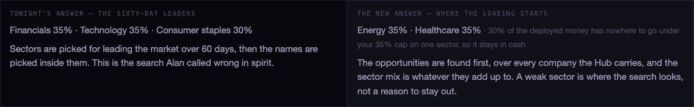
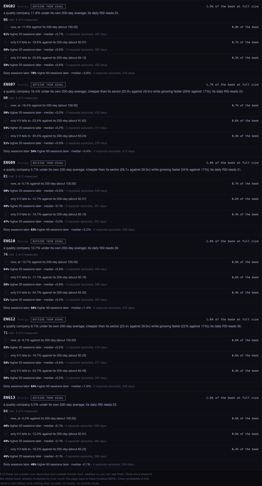
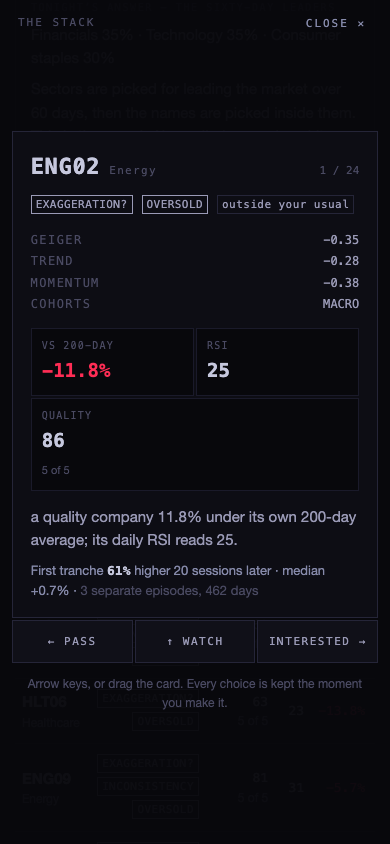
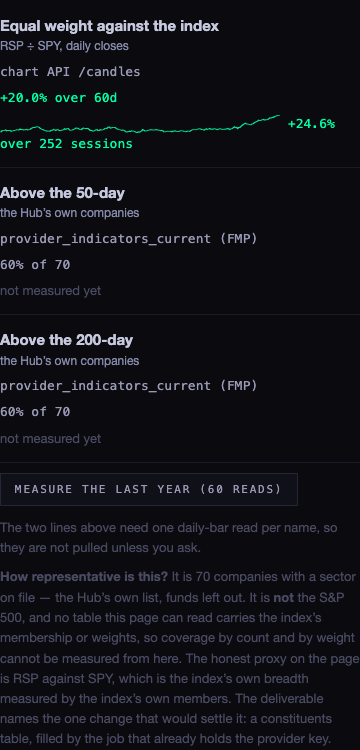

The allocation page used to pick the four sectors that had led the market for sixty days and then look for names inside them. That is why it said 35% energy on a night you thought energy was overbought: it was buying leaders, not opportunities. The search has been turned round.
The old answer is still computed and still on the page, next to the new one, so you can see what changed and judge it. The new answer works bottom up: every company the Hub carries is searched first, and the sector mix is whatever the opportunities add up to. A weak sector is where the search looks, not a reason to stay out.

The two answers, rendered offline against fixtures (see EVIDENCE below). Left: the old sixty-day-leaders answer. Right: the new one, which found its names in the two beaten-up sectors.
Every proposed action is three tranches: a first one now, then adds only if the name falls further against its own 200-day average. Each step carries the probability measured at that depth, from that name's own daily history and nothing else: after the last times it was this far below its 200-day, how often it was higher 20 and 60 sessions later, and by how much.
First tranche · 61% higher 20 sessions later · median +0.7% · 3 separate episodes, 462 days
Days inside one selloff overlap, so they are not independent tries. The honest sample is the number of separate episodes, and that is the number the minimum is applied to. Under your line (three episodes by default) the page shows no probability at all and says why.

The page now ends in proposed actions: name, size, trigger, why, probability.
A card stack of what the search found. Right is interested, left is a pass, up is a watch. Arrow keys work, and so does dragging the card on a phone. Each card carries the name, its cohorts, its Geiger with trend and momentum, the distance to the 200-day, the quality score with how much of it was measured, the probability line, and the reason in one sentence.

The card at 390 wide. The same card at 1680 is in screens/swipe-1680.png.
Every swipe is written to this device the moment you make it, then pushed to the server through the same operator path the board uses for favourites. What you have swiped feeds back as a weight you can see and change (HOW MUCH YOUR OWN SWIPES COUNT), per cohort and per sector.
Every toggle on the page now carries one plain sentence saying what it does to deployed cash, and they are collected in one table on the page. The short version:
| TOGGLE | WHAT IT DOES TO DEPLOYED CASH |
|---|---|
| A flat market means this much invested | Straight up or down: every point here is a point of deployed cash when the market reads flat. |
| How hard the reading moves that number | Straight up or down: higher deploys more when the reading is good and less when it is bad. |
| How much breadth counts (new) | Straight up or down. Breadth is the only leg that can pull the number off the board's own average. It was already in the arithmetic but was not adjustable — now it is. |
| Cash you always keep | A hard ceiling: deployed can never pass 100 minus this, whatever everything else says. |
| The first tranche (new) | The conservative dial: a smaller first tranche puts less in today and leaves the rest in cash until the name falls further. |
| How much further it must fall for the next tranche (new) | A wider step means the later tranches are reached less often, so less is deployed over time. |
| Everything else | Changes what you own, not how much. Each one says so in its own row on the page. |
One thing the page now admits out loud: when only one or two sectors carry opportunities, the cap on any single sector can leave part of the deployed money with nowhere to go. It stays in cash and the page says how much, rather than pushing it into a sector the search did not choose.
Breadth is now a line over the last year, not one number, with its source named beside it.
| MEASURE | WHERE IT COMES FROM | SHAPE |
|---|---|---|
| Equal weight against the index (RSP ÷ SPY) | chart API /candles, daily closes | A full year, drawn, every session. Two reads. |
| Share above the 50-day | provider_indicators_current, provider FMP, the same table the board's own RSI column reads | Today from the published averages; the year-long line is measured on request over the largest names, one daily-bar read each, and it prints its own sample size. |
| Share above the 200-day | the same | the same |
The year-long lines are behind a button on purpose: they cost one read per name, and nothing on this page spends bandwidth without being asked.
The honest answer tonight is: this page cannot measure it. Breadth here is the Hub's own companies — the names with a sector on file, funds left out. No table this page can read carries the S&P 500's membership or its weights, so coverage by count and by weight cannot be computed, and the page says so where the numbers are rather than implying its breadth is the index's breadth.
The one change that would settle it is written and waiting: supabase/migrations/20260924_index_constituents.sql
adds an empty index_constituents table (index, ticker, weight, sector, as-of, source). The
job that already holds the provider key fills it; the page never sees that key. The day one row lands,
the page can state coverage both ways and check RSP-against-SPY against the real thing.
What can be said now: RSP against SPY is the index's own breadth, measured by the index's own members, and it is on the page as a year-long line.

The breadth panel at 390, each measure stacked with its source.
| YOUR QUESTION | WHERE THE PAGE ANSWERS IT |
|---|---|
| Which names are the most oversold? | A list, by RSI, with the distance to the 200-day and the quality score beside each one. It is the Hub's companies, not the S&P 500, and it says so. |
| Is there a quality company at or near its 200-day? | Its own list, sorted by how close, and only names that clear your quality line appear on it. |
| Is there a tradeable exaggeration in a quality company? | That is the EXAGGERATION? label, and the probability line under it is what makes it a question rather than a claim. |
| Of the leaders on pullbacks, is it a tradeable pullback? | The PULLBACK label, and the WHICH SEARCH LEADS toggle set to LEADERS ON PULLBACKS. |
| A low P/E, better multiple than peers, higher growth | The INCONSISTENCY label. Peers are the sector, not the sub-industry — the tables do not carry a sub-industry, and the page says that where it matters. |
| What does weak breadth with strong earnings nudge allocation towards? | Weak breadth cuts how much is deployed (that is the breadth weight, now adjustable), while the search keeps hunting inside the weakness. Conservative on deployment, contrarian on selection. |
| A rising tide lifts all boats | SPY against its own 200-day, and its last sixty sessions, at the top of THE TIDE. |
| Midterms, and the cyclical calendar | Measured from SPY's own history, with the years named. Four or five years is far too few to lean on, and the sample size is printed for exactly that reason. |
| Not always the trade I like | Every action is labelled A FAVOURITE, YOUR USUAL GROUND, or OUTSIDE YOUR USUAL, and the list deliberately reaches past frontier tech to fill the last slots. |
| NUMBER | SOURCE |
|---|---|
| Geiger, per name and per cohort | the live artifact from the chart API, plus ticker_cohorts — unchanged, and still matching the board |
| Quality legs | ratios_history (net margin, return on equity, debt to equity, and the margin trend across full years), fundamentals (trailing earnings) and fwd_eps_ntm (the next twelve months' earnings) |
| Oversold legs | provider_indicators_current — daily RSI(14) and the 50- and 200-day averages, provider FMP |
| Probabilities and staged levels | the chart API's daily bars for that one name, up to about five years, read only for the names that reach the stack |
| The tide and the calendar | SPY's daily bars from the chart API |
| Favourites | hub_favorites, the server list, the same on every device |
| Your swipes | this device first, then allocation_operator_votes through the operator-write function |
n of 5) but not that the sector is worth owning.Everything above was rendered and photographed offline against generated fixtures: a small made-up market of 70 companies across five sectors, in which two sectors are beaten down and hold the good companies. Every request the page made was intercepted and answered locally — 144 of them — so no production table and no chart API was read, and the "key" the page found was the literal word FIXTURE. The browser ran headless and was closed at the end; nothing appeared on your screen.
Why fixtures and not the live site: two attempts to read live data from this session were refused by this machine's own permission gate — once for reading the published key, once for reading production through a browser. Those refusals were left in place rather than worked around. So the page's logic and layout are proven, and its live numbers are not. The first thing to do with this branch is open it against the live site and read the same panels.
The offline render did catch three real defects, which are fixed: a swipe was stored under a cohort's label and read back under its key, so swipes moved nothing; the vote writer called a rendering function directly, so a refused write threw; and the lane used two pieces of state the page had never declared, which made it throw on every load until the first render was actually looked at.
Tests: 15 new (tests/allocation-contrarian.test.mjs), all passing.
Whole suite 532 pass, 2 fail — the same two that already fail on production.
allocation_vote, and the exact code is in the migration file. Until it lands,
every swipe is kept on the device and the page says how many are waiting.